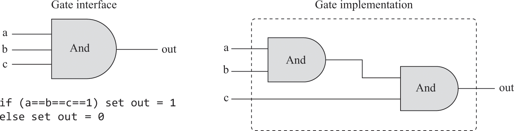
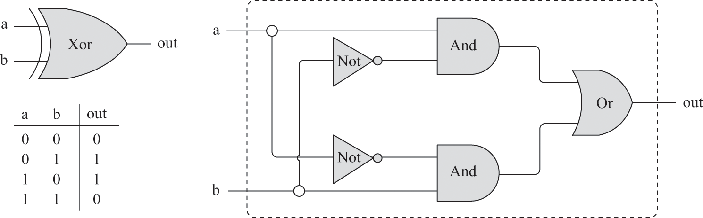
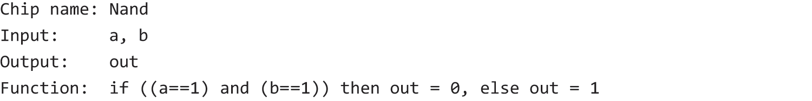
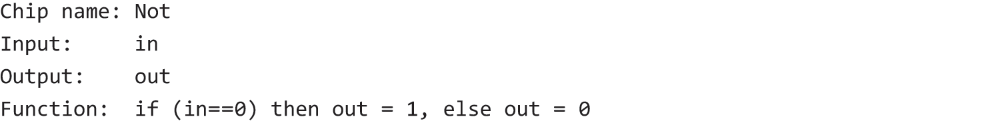
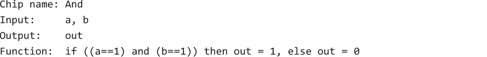
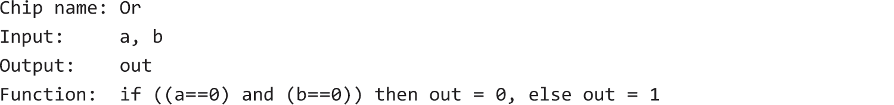
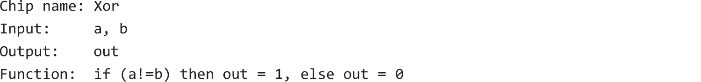
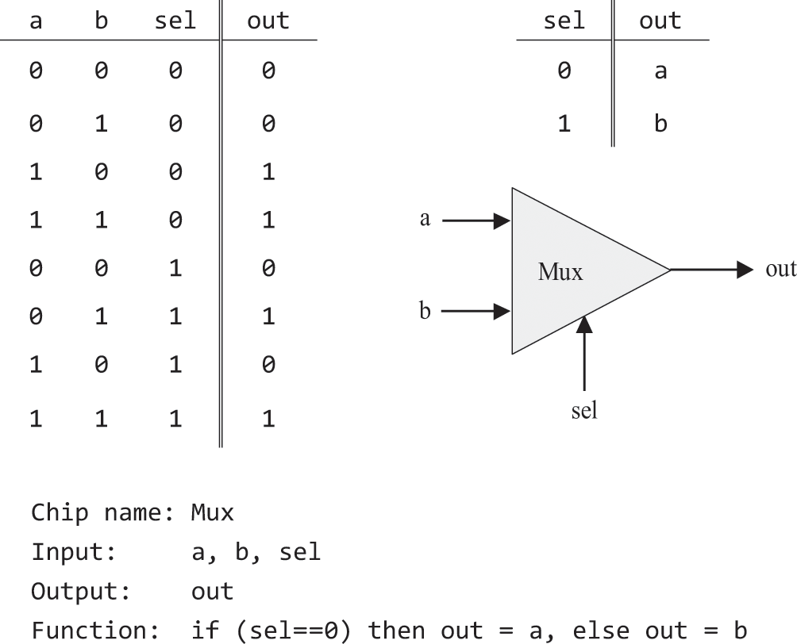
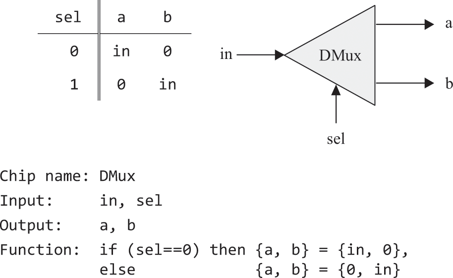

2.1 Logic Gates
- A gate is a physical device that implements a simple Boolean function
- Gate diagrams for the three elementary logic gates:

Primitive and Composite Gates
- Since all gates have binary inputs and outputs, they can be combined to make composite gates of arbitrary complexity
- For example, if we have 3 inputs of 1s and we need to determine if all are 1's, we can combine two and gates to achieve this:

- From this diagram, we can see that gates can be viewed internally, where the logic is shown entirely, and externally, where the complexity of this logic is abstracted away
- For the XOR gate, we can see this in more detail:

- This implementation can be realised in numerous ways, however the less gates used, the less cost, energy and faster the computation is
Hardware Construction
- Building chips by hand is a messy, time consuming and error prone affair
- Designs are now completed using HDL
- Chip logic is defined inside a program, which is then subjected to tests
- Iterations of designs and testing is conducted until the desired ratio of performance / cost is reached, in which case chips can start to be mass produced error free
Specification
- Now that we have identified the Boolean functions used to build chips, we can specify their logic in the form of logic gates
NAND

NOT

AND

OR

XOR

Control Gates
Multiplexer
- Has three inputs, two input bits a and b and a selector bit sel
- The selector bit is used to select the value of either a or b to be output

Demultiplexer
- Opposite of a multiplexer
- Selector tells which route an input should go through, the other value is set to 0

Multi Bit Gates
- A multi-bit gate is a logic gate that operates on multi-bit inputs and outputs.
- For example, a 16-bit AND gate takes two 16-bit inputs and produces a 16-bit output, where each bit in the output is the AND of the corresponding bits in the input.
CHIP And16 {
IN a[16], b[16];
OUT out[16];
PARTS:
And(a=a[0], b=b[0], out=out[0]);
// Repeat for a[1] through a[15] and b[1] through b[15]
}
Multi Way Gates
- A multi-way gate is a logic gate that operates across multiple inputs simultaneously.
-
For example, an 8-way OR gate takes an 8-bit input and produces a single-bit output, which is the OR of all 8 input bits.
-
To implement a multi-way gate in HDL, you can create a new chip that uses multiple instances of a basic (single-bit) gate, cascading them to combine multiple inputs into a single output. For example, an 8-way OR gate (
Or8Way) could be implemented as follows:
CHIP Or8Way {
IN in[8];
OUT out;
PARTS:
Or(a=in[0], b=in[1], out=out1);
// More Or chips to combine in[2] through in[7]
Or(a=out1, b=out2, out=out);
}
Implementation
- Now we can describe HOW these gates are implemented
- As we know already, every single gate can be made from AND, OR and NOT, and each of those can be made solely from NAND gates
- So, each implementation of a logic gate can be made solely from NAND gates (or NOR)
NOT via NAND
- Recall, that in a NAND gate, one of the outputs must be false for the input to be true
- This means that if we make the two inputs equal, the output will be the opposite of the input
- This mimics the behaviour of the NOT gate (inverting the input)

AND via NAND
- Remember that NAND is just the inverse of the AND gate
- This means we can just invert the output of a NAND gate via a NOT GATE
- We already know that a NOT gate can be made by connecting the inputs of a NAND GATE

OR via NAND
- Combine the outputs of two NOT gates into a NAND gate
- Something about De Morgan’s Theorem that I don’t understand and don’t plan on understanding

NAND via AND, OR, NOT

NOR via AND, OR, NOT

Hardware Description Language
CHIP Xor {
IN a, b;
OUT out;
PARTS:
Not(in=a, out=na);
Not(in=b, out=nb);
And(a=na, b=b, out=c);
And(a=a, b=no, out=d);
Or(a=c, b=d, out=out);
}
Interface
- Contains inputs and outputs
Implementation
- Contains inputs and outputs of each specific gate